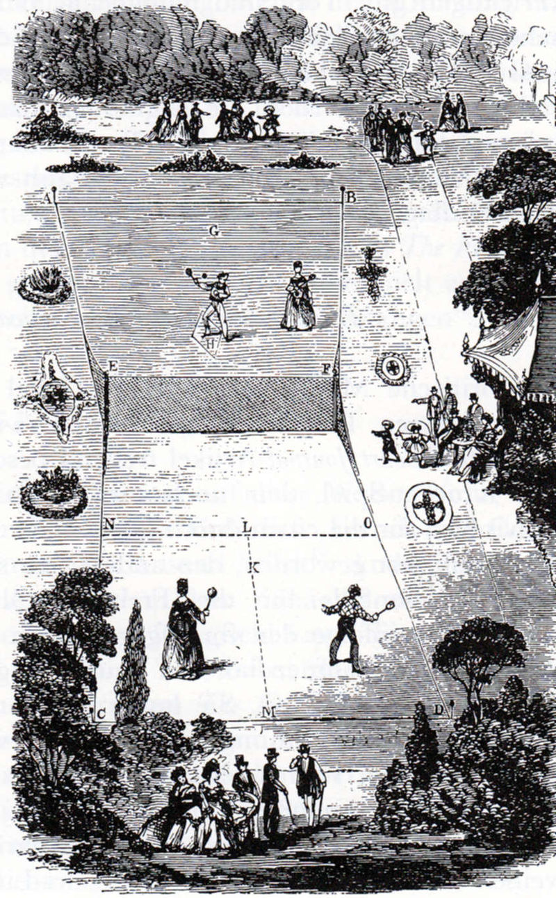
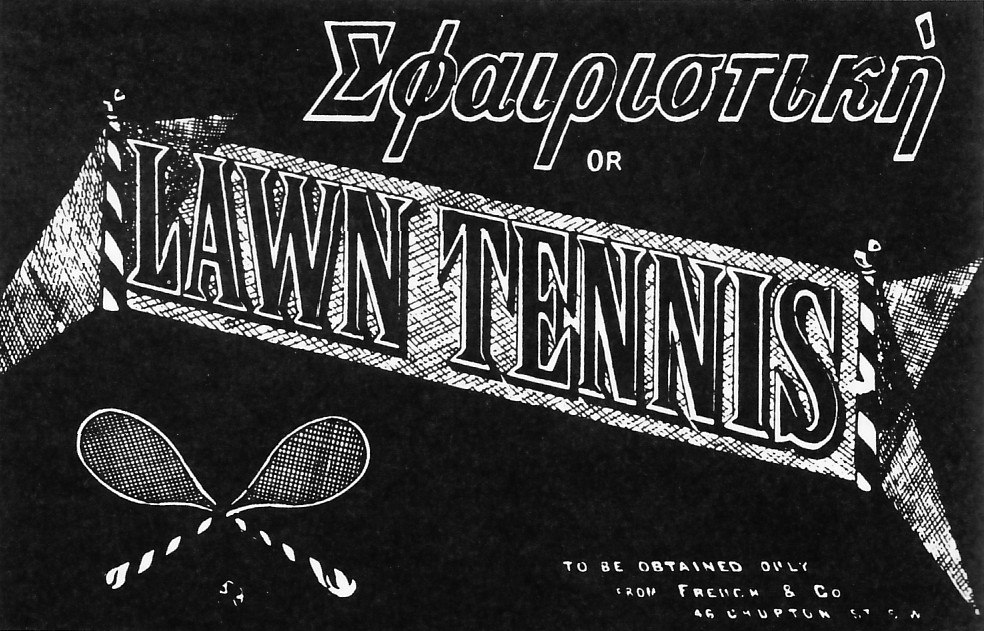
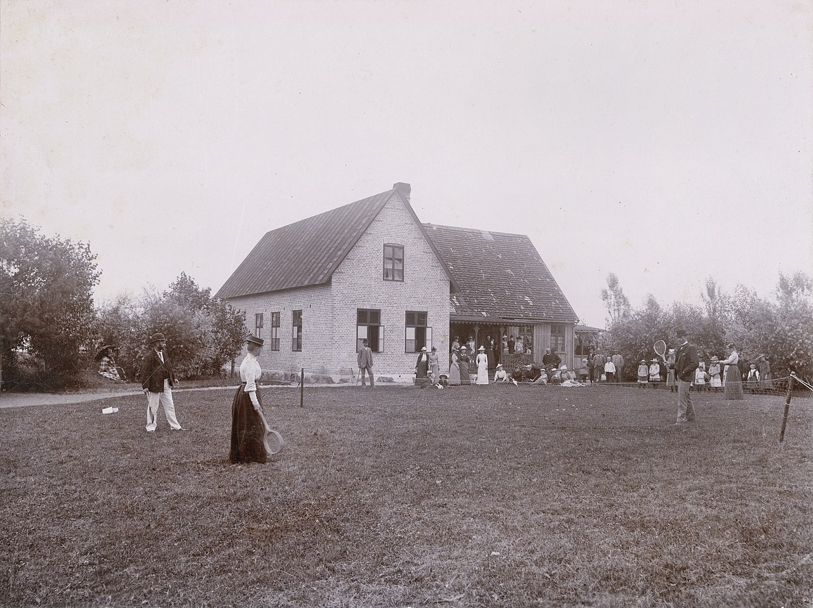
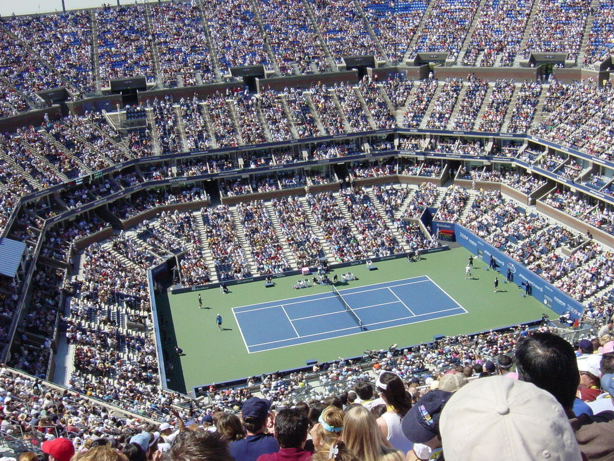
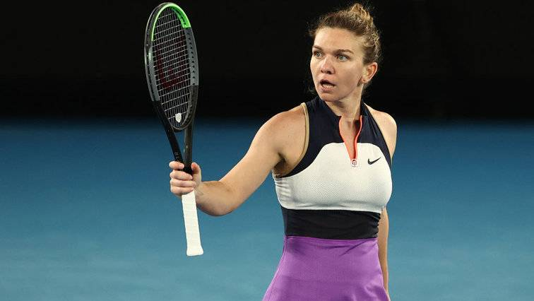
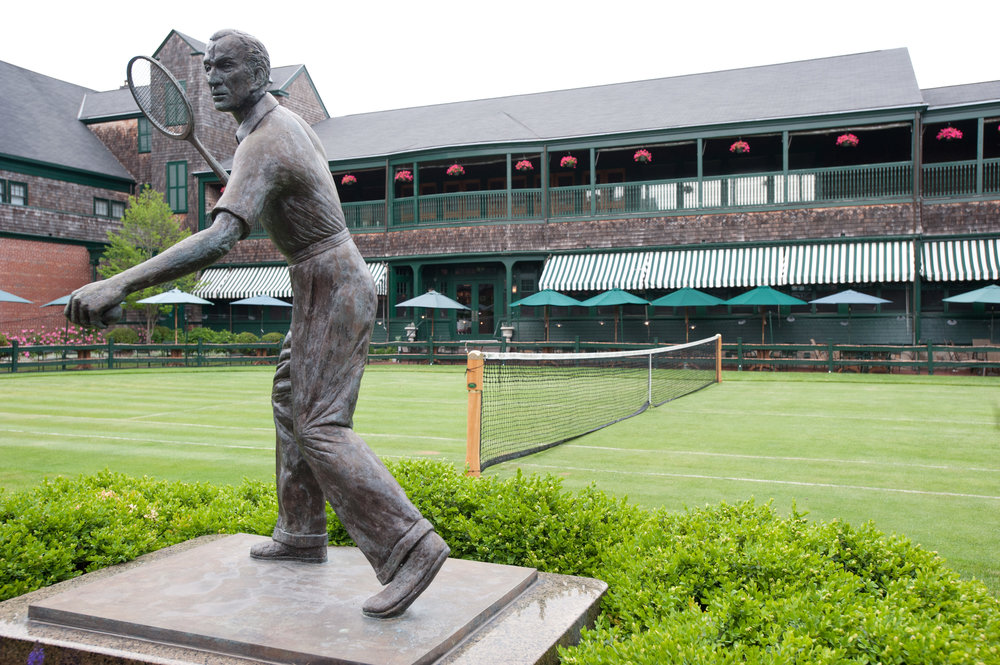

Istoria Tenisului
Istoria Tenisului
Tenisul este un sport de rachetă care poate fi jucat individual împotriva unui singur adversar (simplu) sau între două echipe de câte doi jucători (dublu). Fiecare jucător folosește o rachetă de tenis care este înșirată cu un cablu pentru a lovi o minge de cauciuc goală acoperită cu pâslă deasupra sau în jurul unei plase și în terenul adversarului. Obiectivul jocului este să manevreze mingea în așa fel încât adversarul să nu poată juca o revenire validă. Jucătorul care nu poate întoarce mingea nu va câștiga un punct, în timp ce jucătorul opus o va face.
Origini
Origini
Tenisul este menționat în literatură încă din Evul Mediu. În The Second Shepherds 'Play (c. 1500) păstorii i-au oferit trei daruri, inclusiv o minge de tenis, nou-născutului Hristos. Sir Gawain, un cavaler al mesei rotunde a regelui Arthur, joacă tenis împotriva unui grup de 17 giganți din The Turke și Gowin (c. 1500). Tenisul este descendentul direct al ceea ce se numește acum tenis real sau tenis regal, care continuă să fie jucat astăzi ca un sport separat, cu reguli mai complexe. Majoritatea regulilor de tenis (pe gazon) derivă din acest precursor și este rezonabil să vedem ambele sporturi ca variante ale aceluiași joc.
Forma medievală de tenis este denumită tenis real, un joc care a evoluat de-a lungul a trei secole, dintr-un joc de minge anterior jucat în jurul secolului al XII-lea în Franța, care presupunea lovirea unei mingi cu mâna goală și mai târziu cu o mănușă. Până în secolul al XVI-lea, mănușa devenise o rachetă, jocul se mutase într-o zonă de joc închisă, iar regulile se stabilizaseră. Tenisul adevărat s-a răspândit în popularitate în toată regalitatea în Europa, atingând apogeul în secolul al XVI-lea.

În 1437, la Blackfriars, Perth, jocul de tenis a dus indirect la moartea regelui James I al Scoției, când orificiul de scurgere, prin care spera să scape de asasini, a fost blocat pentru a preveni pierderea mingilor de tenis. James a fost prins și ucis. Francisc I al Franței (1515–1547) a fost un jucător entuziast și promotor al tenisului real, construind terenuri și încurajând jocul între curteni și oameni de rând. Succesorul său Henric al II-lea (1547–59) a fost, de asemenea, un jucător excelent și a continuat tradiția regală franceză. În 1555, un preot italian, Antonio Scaino da Salothe, a scris prima carte cunoscută despre tenis, Trattato del Giuoco della Palla. Doi regi francezi au murit din cauza episoadelor legate de tenis - Ludovic al X-lea, după o joacă puternică, și Carol al VIII-lea, după ce a lovit capul în timpul unui joc. Regele Carol al IX-lea a acordat o constituție Corporației profesioniștilor în tenis în 1571, creând primul „turneu” profesionist de tenis, stabilind trei niveluri profesionale: ucenic, asociat și master. Un profesionist numit Forbet a scris și a publicat prima codificare a regulilor în 1599.
Interesul regal pentru Anglia a început cu Henric al V-lea (1413–22). Henric al VIII-lea (1509–47) a avut cel mai mare impact ca tânăr monarh; jucând jocul cu poftă la Hampton Court pe un teren pe care l-a construit în 1530. Se crede că a doua soție a sa, Anne Boleyn, urmărea un joc când a fost arestată și că Henry se juca când a sosit vestea execuției ei. În timpul domniei lui Iacob I (1603–25), Londra a avut 14 terenuri/curți.
Rămân multe terenuri originale de tenis, inclusiv terenuri de la Oxford, Cambridge, Palatul Falkland din Fife, unde se juca în mod regulat Maria Regina Scoțiană, și Palatul Hampton Court. Multe dintre instanțele franceze au fost dezafectate de teroarea care a însoțit Revoluția franceză. Jurământul pe terenul de tenis (Serment du Jeu de Paume) a fost un eveniment esențial în primele zile ale Revoluției Franceze. Jurământul a fost un angajament semnat de 576 din cei 577 de membri din cel de-al treilea domeniu care au fost închiși dintr-o ședință a statelor generale la 20 iunie 1789.
Tenisul adevărat este menționat în literatură de William Shakespeare care menționează „mingi de tenis” în Henry V (1599), când un coș din ele este dat regelui Henry ca o batjocură a tinereții și a jucăriei sale; incidentul este menționat și în unele cronici și balade anterioare. Una dintre cele mai izbitoare referințe timpurii apare într-o pictură a lui Giambattista Tiepolo intitulată Moartea zambilului (1752–1753) în care sunt prezentate o rachetă înșirată și trei mingi de tenis. Tema picturii este povestea mitologică a lui Apollo și Hyacinth, scrisă de Ovidiu. Giovanni Andrea dell'Anguillara l-a tradus în italiană în 1561 și a înlocuit vechiul joc de disc, în textul original cu pallacorda sau tenis, care obținuse un statut înalt la curți la mijlocul secolului al XVI-lea. Pictura lui Tiepolo, expusă la Museo Thyssen Bornemisza din Madrid, a fost comandată în 1752 de contele german Wilhelm Friedrich Schaumburg Lippe, care era un jucător de tenis avid.
Jocul a prosperat în rândul nobilimii din secolul al XVII-lea în Franța, Spania, Italia și în Imperiul Austro-Ungar, dar a suferit sub puritanismul englez. În epoca lui Napoleon, familiile regale ale Europei au fost asediate, iar tenisul real a fost în mare parte abandonat. Tenis adevărat a jucat un rol minor în istoria Revoluției Franceze, prin jurământul de tenis, a angajament semnat de deputații francezi pe un teren de tenis real, care a constituit un pas decisiv timpuriu începând revoluția. În Anglia, în secolele al XVIII-lea și începutul secolului al XIX-lea, este adevărat tenis a refuzat, au apărut alte trei sporturi de rachete: rachete, rachete de squash și tenis de gazon (joc modern).
Începutul tenisului de câmp
Începutul tenisului de câmp
Avocatul și memoriistul William Hickey și-a amintit că în 1767 „în vară aveam un alt club, care s-a întâlnit la Casa Roșie din câmpurile din Battersea, aproape vizavi de Ranelagh ... Jocul pe care l-am jucat a fost o invenție a noastră și a fost numit câmp tenisul, care oferea un exercițiu nobil ... Terenul, care avea o suprafață de șaisprezece acri, a fost păstrat într-o ordine la fel de înaltă și neted ca un bowling green ".

Între 1859 și 1865, la Birmingham, Anglia, maiorul Harry Gem, avocat, și prietenul său Augurio Perera, un comerciant spaniol, au combinat elemente ale jocului de rachete și pelotă bască și l-au jucat pe o peluză de croquet din Edgbaston. În 1872, ambii bărbați s-au mutat la Leamington Spa, iar în 1874, cu doi medici de la Spitalul Warneford, au fondat primul club de tenis din lume, Leamington Tennis Club.
În decembrie 1873, maiorul Walter Clopton Wingfield a proiectat un teren de tenis în formă de clepsidră pentru a obține un brevet pe terenul său (întrucât terenul dreptunghiular era deja în uz și era nepatentabil). Un brevet temporar pe această curte în formă de clepsidră i-a fost acordat în februarie 1874, pe care nu l-a reînnoit niciodată când a expirat în 1877. Se crede, în mod eronat, că Wingfield a obținut un brevet asupra jocului pe care l-a conceput pentru a fi jucat pe acel Wingfield nu a solicitat și nu a primit niciodată un brevet pentru jocul său, deși a obținut un drept de autor - dar nu un brevet - cu privire la regulile sale de joc. Și, după o serie continuă de articole și scrisori în revista sportivă britanică The Field, și o întâlnire la Marylebone Cricket Club din Londra, regulile oficiale de tenis pe gazon au fost promulgate de acel club în 1875, care nu a păstrat niciunul dintre aspectele variațiilor. că Wingfield a visat și a numit Sphaeristikè (în greacă: σφαιριστική, adică "sfera-istică", un adjectiv grecesc vechi care înseamnă "sau care aparține utilizării unei mingi, glob sau sferă"), care a fost în curând corupt în "lipicios" ". Wingfield a susținut că și-a inventat versiunea jocului pentru distracția oaspeților săi la o petrecere de grădină de weekend în proprietatea sa din Nantclwyd, în Llanelidan, Țara Galilor, în 1874, dar cercetările au demonstrat că nici măcar jocul său nu a fost probabil jucat în acea țară. weekend în Țara Galilor. Probabil își bazase jocul atât pe sportul în evoluție al tenisului în aer liber, cât și pe tenisul real. O mare parte din terminologia modernă a tenisului derivă, de asemenea, din această perioadă, pentru că Wingfield și alții au împrumutat atât numele, cât și o mare parte din vocabularul francez al tenisului real și le-au aplicat variațiilor lor de tenis real. În lucrarea științifică Tenis: o istorie culturală, Heiner Gillmeister dezvăluie că, la 8 decembrie 1874, Wingfield îi scrisese lui Harry Gem, comentând că experimentase cu versiunea sa de tenis pe gazon de un an și jumătate. Însuși Gem îl acreditase pe Perera cu invenția jocului.
Wingfield și-a brevetat curtea cu clepsidră în 1874, dar nu și cartea sa de regulă de opt pagini intitulată „Sphairistike or Lawn Tennis”, dar nu a reușit să-și pună în aplicare brevetul. În versiunea sa, jocul a fost jucat pe un teren în formă de clepsidră, iar plasa era mai înaltă (4 picioare 8 inci) decât în tenisul oficial de gazon. Serviciul trebuia făcut dintr-o cutie în formă de diamant, doar în mijlocul unei părți a terenului, iar serviciul trebuia să sară dincolo de linia de serviciu, în loc să fie în fața ei. El a adoptat sistemul de scoruri bazat pe rachete, unde jocurile erau formate din 15 puncte (numite „ași”). Niciuna dintre aceste ciudățenii nu a supraviețuit Regulilor de tenis pe gazon ale lui Marylebone Cricket Club din 1875 care au fost oficiale, cu modificări periodice ușoare, de atunci. Aceste reguli au fost adoptate de All England Lawn Tennis and Croquet Club pentru primul campionat de tenis Lawn, de la Wimbledon în 1877 (oamenii care au conceput aceste reguli erau membri ai ambelor cluburi). Wingfield merită un mare credit pentru popularizarea jocului de tenis pe gazon, întrucât a comercializat, într-un singur set la cutie, toate echipamentele necesare pentru a juca versiunea lui sau a altor versiuni ale acestuia, echipamente care fuseseră disponibile anterior doar în mai multe puncte de vânzare diferite. Datorită acestei comodități, versiunile jocului s-au răspândit ca un incendiu în Marea Britanie, iar până în 1875 tenisul pe gazon a înlocuit practic croquetul și badmintonul ca jocuri în aer liber atât pentru bărbați, cât și pentru femei.
Mary Ewing Outerbridge a jucat jocul în Bermuda la Clermont, o casă cu gazon spațios în parohia Paget. Nenumărate istorii susțin că în 1874, Mary s-a întors din Bermuda la bordul navei SS Canima și a introdus tenisul pe gazon în Statele Unite, înființând presupus primul teren de tenis din Statele Unite pe terenul clubului de cricket și baseball Staten Island, care a fost aproape de locul unde se află astăzi terminalul de feribot Staten Island. Clubul a fost fondat în jurul sau pe 22 martie 1872. De asemenea, se spune în mod eronat că a jucat primul joc de tenis din SUA împotriva sorei sale Laura în Staten Island, New York, pe un teren în formă de clepsidră. Cu toate acestea, toate acestea ar fi fost imposibile, deoarece echipamentul de tenis despre care se spune că a adus din Bermuda nu a fost disponibil în Bermuda decât în 1875, iar următoarea ei călătorie în Bermuda, când a fost disponibilă acolo, a fost în 1877. De fapt, tenisul de gazon a fost introdus pentru prima dată în Statele Unite pe un teren de iarbă de pe proprietatea colonelului William Appleton din Nahant, Massachusetts, de către Dr. James Dwight („Tatăl tenisului american de gazon”), Henry Slocum, Richard Dudley Sears și jumătatea lui Sears fratele Fred Sears, în 1874.

Turnee și tururi din era pre-Open
Turnee și tururi din era pre-Open
Turnee de amatori
-
1877: WimbledonCampionatele, Wimbledon, au fost fondate de All England Lawn Tennis and Croquet Club în 1877 pentru a strânge bani pentru club. Primele campionate au fost disputate de 22 de bărbați, iar câștigătorul a primit o Cupă Silver Gilt, care a proclamat câștigătorul drept „Campionul Mondial al Clubului de Tenis All England Lawn Tennis”. Primele campionate au culminat cu o dezbatere semnificativă cu privire la modul de standardizare a regulilor. În anul următor, a fost recunoscut drept campionatul oficial britanic, deși a fost deschis competitorilor internaționali. În 1884 au fost inaugurate Campionatele Feminine de simplu și de dublu pentru bărbați, urmate de feminin și de dublu mixt în 1913.
-
1881: U.S. OpenTenisul a fost jucat pentru prima dată în S.U.A. pe un teren de iarbă amenajat pe moșia colonelului William Appleton din Nahant, Massachusetts, de James Dwight, Richard Dudley Sears și Fred Sears în 1874. În 1881, dorința de a juca tenis competitiv a dus la înființarea de cluburi de tenis. Primul turneu național american s-a jucat în 1880 la Staten Island Cricket and Baseball Club din New York. Un englez pe nume Otway Woodhouse a câștigat meciul de simplu. A existat și un meci de dublu câștigat de o pereche locală. La fiecare club existau reguli diferite. Mingea din Boston a fost mai mare decât cea folosită în mod normal în NY. La 21 mai 1881, a fost formată Asociația Națională de Tenis din Statele Unite (acum Asociația de Tenis a Statelor Unite) pentru a standardiza regulile și a organiza competiții. Campionatul național masculin de simplu masculin din SUA, acum US Open, a avut loc prima dată în 1881 la Newport, Rhode Island. Campionatele Naționale de Feminin din Statele Unite ale Americii au avut loc prima dată în 1887 la Philadelphia.
-
1891/1925: French OpenTenisul a fost predominant un sport al lumii vorbitoare de limbă engleză, dominat de Marea Britanie și Statele Unite. A fost, de asemenea, popular în Franța, unde Deschiderea Franței datează din 1891 ca Championat de France International de Tennis. Acest turneu nu a fost recunoscut ca turneu de Major sau Grand Slam până când nu a fost deschis tuturor naționalităților în 1925.
-
1905: Australian OpenAustralian Open a fost disputat pentru prima dată în 1905 sub numele de Campionatele Australaziei (Australia și Noua Zeelandă). Datorită îndepărtării sale geografice, istoric, evenimentul nu a câștigat prezența jucătorilor de tenis de top. A devenit unul dintre marile turnee de tenis începând din 1924 (desemnat de ILTF). În 1927, datorită faptului că autoritățile de tenis din Noua Zeelandă și-au eliberat angajamentele față de turneu, a devenit cunoscut sub numele de Campionatele Australiene. În cea mai mare parte a anilor 1970 și începutul anilor 1980, evenimentul a lipsit de participarea profesioniștilor de tenis de top. De la mutarea sa în Melbourne Park în 1988, Australian Open a câștigat popularitatea celorlalte trei companii majore.
-
Davis CupÎn 1898, Dwight F. Davis de la echipa de tenis a Universității Harvard a proiectat un format de turneu cu ideea de a-i provoca pe britanici la o confruntare a tenisului. Primul meci, între Statele Unite și Marea Britanie, a avut loc la Boston, Massachusetts, în 1900. Echipa americană, din care făcea parte Dwight Davis, i-a surprins pe britanici câștigând primele trei meciuri. În 1905, turneul s-a extins pentru a include Belgia, Austria, Franța și Australasia, o echipă combinată din Australia și Noua Zeelandă care au concurat împreună până în 1913. Turneul a fost inițial cunoscut sub numele de International Lawn Tennis Challenge. A fost redenumit Cupa Davis după moartea lui Dwight Davis în 1945. Turneul sa extins foarte mult și, la împlinirea a 100 de ani în 1999, 130 de națiuni au concurat.
-
Fed CupIdeea unui turneu în stilul Cupei Davis pentru echipele naționale feminine este surprinzător de veche - a fost propusă pentru prima dată în 1919 de Hazel Hotchkiss Wightman. După ce a fost refuzată, a donat în 1923 un trofeu care va fi cunoscut sub numele de Cupa Wightman, acordat într-un meci anual între cele mai puternice națiuni de tenis feminin ale vremii, Statele Unite și Marea Britanie. Ideea inițială a lui Wightman pentru un turneu mondial pe echipe feminine avea să dea roade peste 40 de ani mai târziu, în 1962, când Nell Hopman a convins ITF (International Tennis Federation) să înceapă sponsorizarea unui astfel de eveniment. Prima Cupă a Federației a fost disputată în 1963 ca parte a serbărilor de 50 de ani ale ITF; a implicat 16 țări și s-a jucat peste o săptămână. În anii 1990, peste 70 de națiuni au concurat în fiecare an, iar calificările regionale au fost introduse în 1992. În 1995, ITF a introdus un nou format în stilul Cupei Davis pentru competiție și l-a redenumit Fed Cup.
Circuitul profesional
În 1926, promotorul C.C. Pyle a stabilit primul turneu profesional cu un grup de jucători americani și francezi care joacă meciuri de expoziție publicului plătitor. Cei mai notabili profesioniști timpurii au fost americanul Vinnie Richards și franceza Suzanne Lenglen. Odată ce un jucător a devenit profesionist, el sau ea nu a mai putut concura în turneele majore (amatori). Înainte de Open Era, cei mai importanți jucători profesioniști erau sub contract cu un promotor profesionist care le controla aparițiile. De exemplu, în 1926, Lenglen și Richards au făcut turnee în America de Nord împreună cu Paul Féret și Mary K. Browne sub contract cu Charles C. Pyle. Principalele evenimente ale circuitului profesional au cuprins competiții cap la cap și campionatele Pro invitație secundară, care erau echivalentul turneelor de Grand Slam din circuitul profesional. Suzanne Lenglen a fost cea mai importantă jucătoare din primul an al circuitului profesional, iar după ce s-a retras în februarie 1927, puține jucătoare au jucat pe circuitul profesional înainte de Open Era.
În anii de dinaintea erei deschise, profesioniștii au jucat adesea mai frecvent în tururi de la cap la cap decât la turnee, deoarece turneele plăteau mult mai bine decât turneele, iar numărul turneelor profesionale era mic. De exemplu, Fred Perry a câștigat 91.000 dolari SUA (1.618.410 dolari astăzi) într-un turneu nord-american din 1937 împotriva lui Ellsworth Vines, dar a câștigat doar 450 dolari SUA (8.173 dolari) pentru victoria sa din 1938 la Campionatele SUA de tenis. Vines probabil nu a participat niciodată la un turneu în 1937 și 1938. În 1937, Vines a jucat 70 de meciuri în două tururi și niciun meci de turneu. Chiar și în anii 1950, unii profesioniști au continuat să joace meciuri de turneu. În primele cinci luni ca profesionist (ianuarie până în mai 1957), Ken Rosewall a jucat 76 de meciuri într-un tur împotriva lui Pancho Gonzales, dar doar 9 meciuri de turneu. Joe McCauley a stabilit că pentru 1952, doar 7 turnee profesionale au fost disputate de jucătorii internaționali de top, iar alte 2 turnee profesionale (British Pro și German Pro) au fost rezervate jucătorilor autohtoni. Abia în anii 1960 turneele profesionale au devenit mai semnificative decât turneele.

Pe lângă evenimentele de la cap la cap, mai multe turnee profesionale anuale au fost numite turnee de campionat. Cel mai prestigios a fost de obicei Campionatul Wembley, desfășurat la Arena Wembley din Anglia, disputat între 1934 și 1990. Cel mai vechi a fost Campionatul SUA de tenis, disputat între 1927 și 1999. Între 1954 și 1962, a fost jucat în interior în Cleveland și a fost numit Campionatele Mondiale Profesionale. Al treilea turneu major a fost Campionatul Francez de Pro, disputat între 1930 și 1968. Campionatele britanice și americane au continuat în Era Deschisă, dar au trecut la statutul de turnee minore după sfârșitul anilor 1960. Turneul Campionilor a avut loc între 1956 și 1959, ediția din 1956 având loc la Los Angeles și edițiile din 1957, 1958 și 1959, la Forest Hills, Queens. A existat și turneul Wimbledon Pro desfășurat în august 1967, primul turneu în care jucătorii profesioniști de tenis au avut voie să joace la Wimbledon.
Turnee și tururi din era Open
Turnee și tururi din era Open
Era deschisă a început în 1968, când turneele de Grand Slam au fost de acord să permită jucătorilor profesioniști să concureze cu amatori. Înainte de 1968, numai amatorii aveau voie să concureze la turneele de Grand Slam și la alte evenimente organizate sau sancționate de ILTF, inclusiv Cupa Davis.
În primii ani ai erei deschise, luptele de putere dintre ILTF și promotorii comerciali au dus la boicotarea evenimentelor de Grand Slam. Primul eveniment Open Era a fost Campionatul Britanic Hard Court din 1968, desfășurat în aprilie la The West Hants Club din Bournemouth, Anglia, în timp ce primul turneu de Grand Slam deschis a fost Openul Franței din 1968 în mai. Ambele turnee au fost câștigate de Ken Rosewall. Era deschisă le-a permis tuturor jucătorilor de tenis să-și câștige existența jucând tenis.
-
National Tennis League (NTL) și World Championship Tennis (WCT)În 1968, câțiva profesioniști erau independenți, printre care Lew Hoad, Mal Anderson, Luis Ayala și Owen Davidson, dar majoritatea celor mai buni jucători erau sub contract. George McCall a operat Liga Națională de Tenis (NTL) și a gestionat Rod Laver, Ken Rosewall, Andrés Gimeno, Pancho Gonzales, Fred Stolle și Roy Emerson. Dave Dixon (urmat ulterior de Lamar Hunt) a condus Campionatul Mondial de tenis (WCT) și a reușit „Handsome Eight”: John Newcombe, Tony Roche, Nikola Pilić, Roger Taylor, Pierre Barthès, Earl „Butch” Buchholz, Cliff Drysdale și Dennis Ralston . În 1968, niciunul dintre jucătorii originali Handsome Eight WCT nu a participat la Openul Franței. În 1970, jucătorii NTL nu au jucat în Australian Open, deoarece organizația lor nu a primit o garanție. În 1970, nici jucătorii WCT și nici cei de la NTL nu au jucat în French Open.
-
Grand Prix circuitÎn primii doi ani ai erei deschise, Liga Națională de Tenis și promotorii WCT au început să preia controlul jocului. Pentru a le depăși, Jack Kramer, cel mai bun jucător de la sfârșitul anilor 1940 / începutul anilor 1950, și la acel moment promotor, a conceput circuitul de tenis al Grand Prix la sfârșitul anului 1969. În 1970, niciunul dintre jucătorii contractuali nu a participat la Openul Franței. Federația Internațională de Tenis pe Gazon, alarmată de controlul promotorilor, a aprobat Marele Premiu al lui Kramer. Douăzeci și șapte de turnee, inclusiv cele trei Grand Slam-uri (French Open, Wimbledon și US Open), au fost disputate în acel an, turneul de la Stockholm încheindu-se la 1 noiembrie. Jucătorii profesioniști independenți, împreună cu câțiva jucători contractuali, au intrat în circuitul Grand Prix. Jucătorii cu contract pot juca evenimente de Grand Prix cu condiția ca contractele lor să le permită și să aibă timp suficient în afară de propriul circuit.
-
ATP TourÎn 1990, Asociația Profesioniștilor din Tenis, condusă de Hamilton Jordan, a înlocuit MTC ca organ de conducere al tenisului profesionist masculin. Au înființat Turul ATP și au împachetat cele mai prestigioase nouă evenimente sub numele de "Championship Series - Single Tournament Week" și începând din 1996, ca "Super Nine". Douăsprezece din Marele Premiu, care au fost puțin mai puțin prestigioase decât primele nouă evenimente, au fost redenumite „Campionatul Seriei - Săptămâna dublă” (adică, în majoritatea cazurilor, 2 dintre aceste turnee au avut loc în aceeași săptămână) și începând în 1996, ca Seria Internațională Aur, în timp ce restul (aproximativ 60) a devenit cunoscut sub numele de International Series. Câștigarea unui turneu Super Nine a valorat aproximativ jumătate din punctele (370) din câștigarea unui turneu de Grand Slam (750), în timp ce turneul International Series Gold a valorat până la 360 de puncte, în funcție de premiul total. Formatul a continuat până în anul 2000, moment în care Super Nine au fost redenumite Masters Series (câștigătorul primind 500 de puncte), ocupând rangul de sub Grand Slams (1000 de puncte pentru câștigător), iar International Series Gold au fost redenumite pur și simplu Championship Series (în valoare de 250 până la 300 de puncte pentru câștigător). În 2000, turneele de Grand Slam și turneele Masters Series au devenit evenimente profesionale obligatorii dacă clasamentul unui jucător îi califică pentru turneu. Jucătorii au fost înregistrați automat și evenimentele Masters și Slam au devenit baza pentru clasamentul jucătorilor, cu până la încă 5 turnee suplimentare numărate (18 în total plus Finala ATP dacă se califică). Înainte de 2000, cele mai bune 14 turnee ale jucătorilor erau numărate în clasamentul punctelor ATP. În 2009, evenimentele Masters au fost redenumite ATP World Tour Masters 1000, Monte-Carlo Masters devenind un eveniment neobligatoriu, ceea ce înseamnă că un jucător ar putea folosi rezultatele unui turneu de nivel inferior în locul acestuia. International Series Gold a devenit ATP World Tour 500, iar celelalte evenimente au devenit ATP World Tour 250. Numerele din numele tipului de turneu indică punctele clasamentului câștigătorilor. Spre comparație, câștigătorului unuia dintre cele patru turnee de Grand Slam i se acordă 2000 de puncte. În 2009, a început să se pună un accent mai mare pe câștigarea unui turneu, întrucât punctele acordate finalistului au scăzut de la 70% din punctele campionului la 60% (adică de la 700 de puncte la 600 de puncte într-un eveniment Masters 1000). De asemenea, au început să se acorde puncte pentru jocul individual la Cupa Davis.
Tenis feminin
Tenis feminin
Tenisul profesionist feminin a început în 1926, când jucătoarea feminină numărul unu mondial Suzanne Lenglen a acceptat 50.000 de dolari pentru o serie de meciuri împotriva triplei campioane americane Mary K. Browne. Seria s-a încheiat în 1927, iar femeile nu au mai concurat ca profesioniști până în 1941, când Alice Marble a condus un turneu împotriva lui Mary Hardwick. Al Doilea Război Mondial a împiedicat majoritatea competițiilor profesionale și mulți jucători au fost implicați în distracția trupelor.

În 1947, femeile profesionale au fost din nou în acțiune cu o serie de meciuri de expoziție de scurtă durată între Pauline Betz și Sarah Palfrey Cooke, ambele campioane naționale ale SUA. În 1950 și 1951, Bobby Riggs a semnat pe Betz și Gussie Moran pentru a juca un turneu profesional cu Jack Kramer și Pancho Segura, în care Betz a dominat Moran. Althea Gibson a devenit profesionist în 1958 și s-a alăturat lui Karol Fageros („Zeița de Aur”) ca act de deschidere pentru Harlem Globetrotters pentru un sezon.
Nu a mai existat practic niciun tenis profesionist feminin până în 1967, când promotorul George McCall i-a semnat pe Billie Jean King, Ann Jones, Françoise Dürr și Rosie Casals pentru a se alătura turneului său de opt bărbați timp de doi ani. Femeile profesioniste au jucat apoi ca independente, deoarece a început Era deschisă. În 1970, promotorul pentru Campionatele Pacificului de Sud-Vest din Los Angeles, Jack Kramer, le-a oferit femeilor doar 7.500 de dolari în premii în bani, față de totalul bărbaților de 50.000 de dolari. Când Kramer a refuzat să se potrivească cu banii premiului pentru bărbați, King și Casals i-au îndemnat pe celelalte femei să boicoteze.
Gladys Heldman, editorul american al revistei World Tennis, a răspuns cu un tur separat pentru femei, sub sponsorizarea țigărilor Virginia Slims. În 1971 și 1972, WT Women's Pro Tour a oferit de aproape 10 ori mai mulți premii decât alte evenimente profesionale de tenis feminin. USLTA inițial nu ar sancționa turul; cu toate acestea, cele două grupuri au decis să ofere Virginia Slims evenimentele individuale, iar USLTA turul, rezolvând astfel conflictul. În 1973, US Open a făcut istorie oferind premii egale pentru bărbați și femei. Billie Jean King, cel mai vizibil avocat al cauzei femeilor, a câștigat peste 100.000 de dolari în 1971 și 1972.
În celebrul meci de expoziție Battle of the Sexes împotriva sexistului vocal Bobby Riggs din septembrie 1973, King a adus și mai multă atenție mass-media tenisului și femeilor profesionale din toate categoriile sociale, învingându-l pe Riggs. Asociația de tenis pentru femei, formată în 1973, este principalul organism organizator al tenisului profesionist feminin, organizând turneul profesional WTA la nivel mondial. În perioada 1984–98, meciurile finale ale evenimentului de campionat au fost cele mai bune din cinci, în mod unic printre turneele feminine. În 1999, finala a revenit la cel mai bun din trei. Campionatele Turului WTA sunt considerate, în general, drept al cincilea cel mai prestigios eveniment feminin (după cele patru turnee de Grand Slam.) Sponsorii au inclus Virginia Slims (1971–78), Avon (1979–82), Virginia Slims din nou (1983–94) , JP Morgan Chase (1996-2000), Sanex (2001) Home Depot (2002) și Sony Ericsson (2006).
Hall of fame
Hall of fame
Sala Internațională a Tenisului Famei este situată în Newport, Rhode Island, Statele Unite. Onorează atât jucătorii, cât și ceilalți participanți la sportul tenisului. Complexul, fostul cazinou Newport, include un muzeu, terenuri de tenis pe iarbă, o instalație de tenis interioară și o instalație de tenis pe teren (sau tenis real). Sala internațională de renume a tenisului este o organizație non-profit care păstrează, sărbătorește și inspiră sportul tenisului din întreaga lume.
